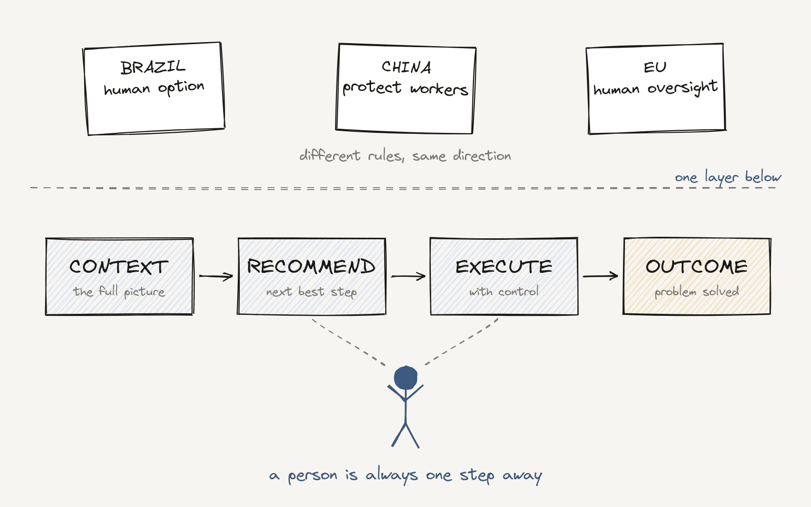

The Human Option: AI Customer Service Needs a Human

Customer service rule in Brazil.
It does not ban AI. In fact, it says companies can use AI to sort, route and even resolve customer requests. But there is one condition: the customer must always be able to reach a real person, in real time. At every step. From the first menu.
I grew up in Brazil, and anyone who has been stuck in a phone menu there knows why this rule exists.
But this is not only a Brazilian story. Similar moves are happening in other parts of the world:
- Brazil: AI can serve customers, but a human must always be one step away.
- China: New State Council guidelines push "employment-friendly" AI: measure job risk before adopting AI, help workers reskill, protect people who work alongside machines.
- European Union: The AI Act requires human oversight for high-risk AI systems. The Platform Work Directive adds rules for when algorithms manage people.
Three very different places. Three different problems. One direction: AI moves forward, and people stay in the loop.
None of these are bans. They are guardrails. And I think they mark a turning point for how we build AI assistants and agents.
Beyond "how much can we automate"
For the last two years, most AI conversations measured one thing: how much human work we can remove.
These rules shift the focus to something else: when a person is needed, that person has to be ready.
That changes the design. If a human is always one step away, the AI's job is not only to replace that person. It is to make the handoff great. The person should arrive with the full picture, a clear next step, and the power to act.
I see four building blocks:
- Context — understand the situation, not just the data.
- Recommendation — suggest the next best action, and explain why.
- Execution — act across systems, with the right level of control.
- Outcome — measure whether the problem was actually solved.
In this model, the human is not the fallback when AI fails. The human is a better decision-maker because AI did the preparation.
I work on the layer that lets companies shape how their service teams and their AI work together. The pattern I see most often: teams spend months on what the AI can do alone, and very little time on the moment it hands off to a person. That moment is where customers decide if they trust you.
The real measure of AI maturity is not how much human involvement we remove. It is how well we combine human judgment with what AI does best.
I believe we are moving from building AI that helps people with tasks to redesigning how the work itself gets done. Rules like Brazil's just make that shift harder to ignore.
Sources: Brazil Decree 13.135/2026 · China AI employment guidelines · EU AI Act, Article 14 · OECD